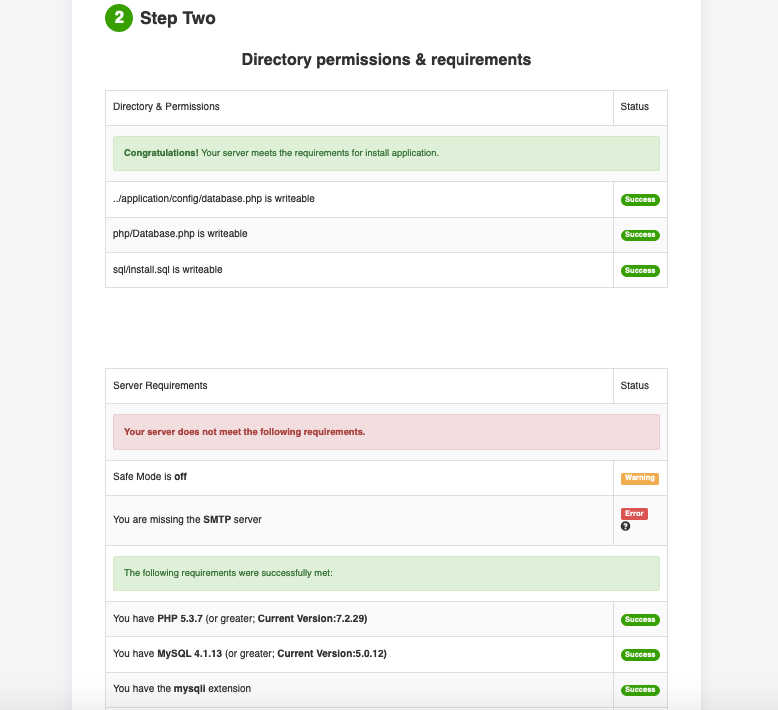
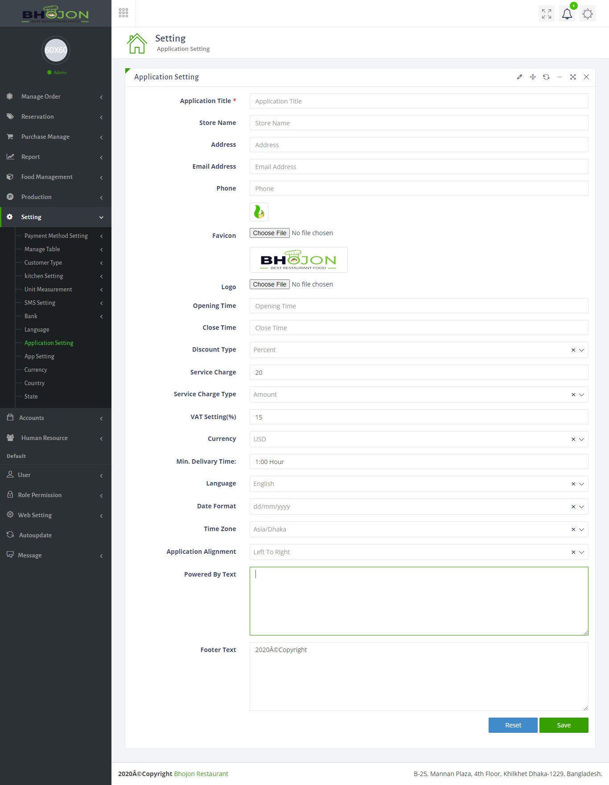
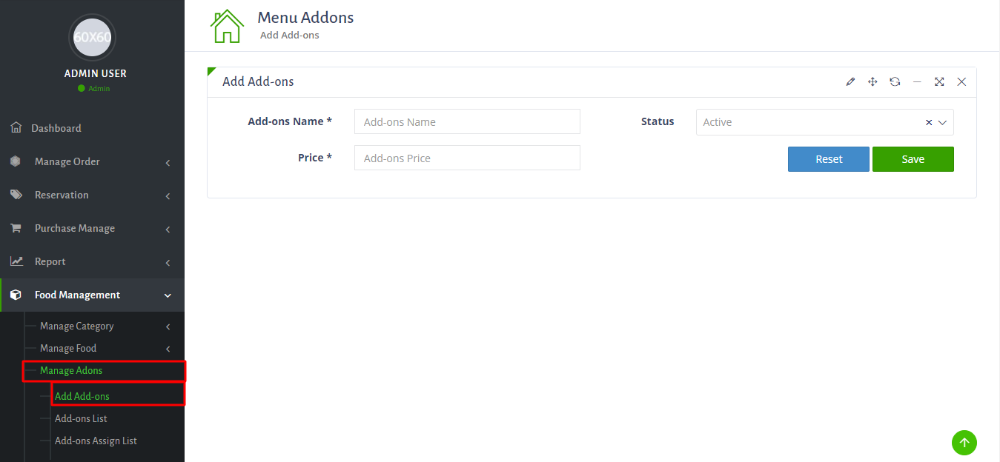
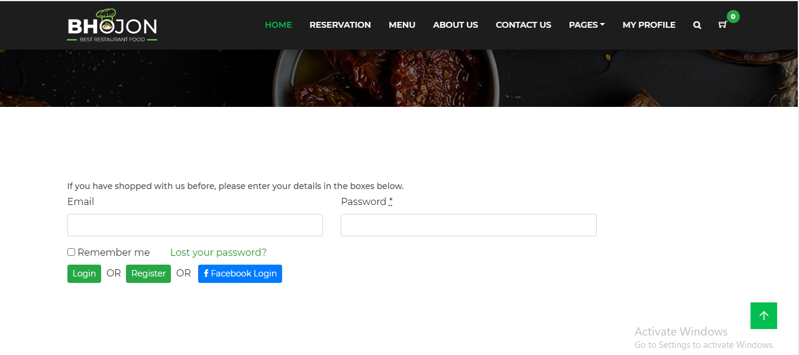
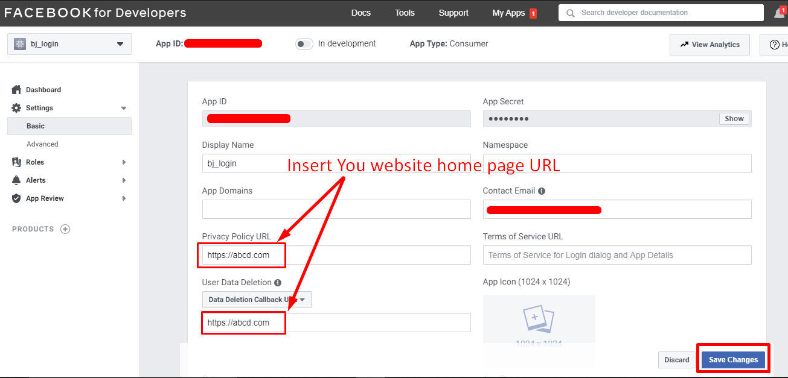

How To Install > PHP Version 7.4 of your Server should be have to run this application
- Please Extract the Bhojon-Main.zip folder. Then you will get Bhojon_main.zip and Documentation Folder, First read the documention.
- Now just Upload the Bhojon_main.zip file to your server using cPanel or FTP.
- Extract the Bhojon_main.zip file.
- Now Make a database in your MySQL Database, and add the database with user.
- Now you just access into your uploaded folder and then move all folders and files (EX: application, assets,index.php,install and system folders) one step up to public_html directory or can create comment folder and then you can keep it at the folder . Note: Keep in mind about .htaccess file is moved correctly otherwise you cannot access into the admin panel. #####################
- Note that: the instruction will be applicable for all other system. #####################
- Now, Browse your application http://yourdomain.com/install If all requirements successfully meet then click on Next button.And also check Purchase key at your envato Download option : https://themeforest.net/downloads
- Installer second step showing the directory and server requirements.and SMTP server.Try to make everything ok,initially SMTP if not enable it will work but for email sending you must setup your server later otherwise email will not deliver.But you can install the application now. 
- *Enter your database name, username, password, host name and click on Next button
- Then wait for 60 Second.
- Now add your own User name and password to login in the system.After login please change the user name and password.
- Installation successfully done…
- Now, Click on Click to launch your application button to access your application
- Thank you for purchasing the Bhojon Restaurent Management System.


System Flow
Login
Admin Login or any user Backend Login:
Application Settings
After login,first thing you have to do is Settings. To get setting of you application, just go to Setting. In this module you will get all the Settings for you application.
Payment Method Setting
To get payment method Setting just go to Setting > Payment Method Setting, insert all necessary information and click on Update. There is no option to add any other Payment Method. If you want to add any other payment method,please contact us.
Add Employee
There is Option in Bhojon to add employee. The Add Employee page is located to Human Resource > HRM. There is some build in Designation is Bhojon for different system management. But you can add as many as you want.
After add Designation, now you are all set to add employee. If you want to make the employee a user, then insert the user name(email can be use also) and password in the Login Information section. you have to insert all necessary info of employee in this proccess. you have to add the waiter and kitchen manager to run the ordering system.
Table Setting
To place orders you need table number. Table Settting is located in the Setting > table Setting.
Kitchen Setting
In this version, we add a new feature in Bhojon named Multi-Kitchen. To Setting of multi kitchen located in Setting > Kitchen Setting.
you can add a kitchen to specific user. To add a user to kitchen just go to Kitchen Assign page then select user and kitchen and cilck save. Make sure you user have the kitchen role from the role permission. either the user will not show in the user listin the kitchen assin page.
Food Add Proccess
Food is the most improtant thing in a restaurent. The Food adding opting is located in the After set the settings above, you are ready to add food.The first step to add food is add Category. if you select the parent category the category you create is showing under the parent category in the website. The active/inactive use to hide the category.
Add Food
In this page you have to insert food name,category,kitchen, default Cooking time, vat. Make the Status Active so that the food should show in the pos Order page and Website menu.
Add Varient & price
After Add a food item, you have to add a Varient. To add varient you just go to Food Maangement > Manage food > Add Varient. In this page just click on the Add varient button to the top right corner.you should see a pop up, then select the food item and insert the varient name and price. Hit Add.
Food Add-ons
To Add-ons in a particular food. just go to Food Management > Manage Add-ons. you will get all the necessary options for add ons. For add new add-ons click on Add Add-ons.
To add an add-ons to a food you have to go to Add-ons Assign List. then follow the proccess in bellow image.
Add Group Food
You can make a set menu from add group item page including some foods. In this page, you can search food and add them with all the details.
Now you are all set. you can now placed order from the POS system
POS order
After login to your sytem successfully, you will find this order page. In this page you can place and manage orders. This page have 5 tab normally. To add QR orders tab, you have to purchase the QR order add-ons.You have to add a counter before you start using pos
POS setting
You can enable/disable some features of POS from POS settings.
Table Selection
You can select the table from POS page person wise. just click the person button in the POS page
On Going Order
This is the Second tab of POS order. In this page, all the running orders will show. you can Edit,Delete & make Invoice in this page
Split Order
You can split the order among several people by this spliting method. In this page, you can Divide the order among several people and make several Invoices for them in this page
Today's Order
This is the third tab of POS. All the Orders of a day will show here.
Online Orders
This is the forth tab of POS. All the orders from customer App will show in this page. Order Accept, Edit and Delete option also in this page
Counter Open & Close Register
Userwise cash open and close Register. You will get the report in report page.To add a new counter just go to Manage order > Counter List.
To Check the Report of Cash Register report. Just go to Report > Cash Register Report
Order List
Order list page will show all the Order
Pending Order
This is the list of Pending orders(The Orders bill is not paid yet).All the pending orders will be show in this page.
Complete Orders List
All the Complete order list will be show in this page
Cancel Orders List
This is the list of Cancel Orders. You will find all the cancel orders in this page and also can see the cancel reason by click on details button(blue button).
Dashboard
Purchase management
Add IngredientThere is a purchase module in Bhojon to purchase ingredient for kitchen. before you purchase a ingredient,you have to add the Ingredient to the Ingredient List, for that you have to go Settings > Unit Measurement > Ingredient List. In this just click on Add Ingredient button. Insert neccessery information and hit Add.
Add Supplier
Now you have to add supplier.To add supplier just go to Purchase manage > manage Supplier. you can also go the add supplier page from Add purchase page.
Add Purchase
In this page you can add purchase. select the supplier name and other Required field and hit Submit.you can add as many as item you want, just click on Add new item button. you can also make a due payment purchase, just select due payment from payment type.

Purchase Return
There is also a return option in the bhojon. the reture option is located in Purchase manage > return purchase.
Suppplier Ledger
In supplier ledger you will get the supplier report for a specific supplier.
User Role Permission
Add UserBhojon have login system for different user. To add a new user just go to User > Add User. you can edit user from user list page.
Add Role
Before you give a role to user, you have to create the role. to create the role just go to Role permission > Add role. Now insert a role name in name box. And select the role you want to give a user.
Assign Role To UserAfter creating the role, you can assign it to any of the user. To assign role just go to role permission > user assign role. then click on the assign role button. you should get a page showing bellow.Now select user and role and click on save button.
Report
There is a Report module in Bhojon. Different kind of Sell report, Purchase Report etc.
Purchase Report
Bhojon have report for Purchase
Stock Report
There is also a report for Stock(kitchen) in Bhojon.
Accounts
Chart of AccountThere is a total Account solution in bhojon. To check the chart of your accounts just go to Accounts > chart to account.
Accounts Voucher
There are 4 type of voucher in the Bhojon Accounts. Dabit Voucher, Credit Voucher,Contra Voucher, Journal Voucher. After creating a voucher, the voucher will not make any effect in the accounts untill you approve it from Voucher Approval page. There is also a Voucher report in Accounts report Section in account module.
Supplier Payment
There is an option for due payment in add purchase page. To pay the due amount to supplier. just go to the Accounts > supplier payment.
Account Report
There is many report in the Account report section. some of them is cash book,bank book,General ledger etc.
Cash bookIn cash book you will get all the cash transaction history
Software Settings
SMS ConfigurationTo send Auto or Custom SMS to your customer. you need to configure the SMS setting. The SMS setting in located in the Settings > SMS Setting.
Bank Setting
To take bank payment you have to Set the bank setting first. To get the bank setting go to Setting> bank
Third Party Customer
Third party customer setting locatated in Setting > Customer type > Third Party Customer.
Currency
you can add multiple currency in bhojon. To add or edit currency just go to Settings > Currency.
Customer Type
There is also customer management system in Bhojon. you can get the customer list, customer type and also option for third party customer.
Country & state
There is some page such as online order, add employee. we need to add country and state. To add countries or states you want just go to Setting > country for add country and Setting > state to add state.
Floor Setting
In this new version of bhojon you can add multiple floor of your restaurent.And also add table in several floor. To add floor Just go to Settings> Manage Table> Table List. And Now Click on add Floor.
Table Setting
To place orders you need table number. Table Settting is located in the Setting > table Setting. To add a new table just click on the table setting button and insert al the data.

Language Setting
You can add as many as language you want. Just go to setting > language.
After add a new language you have to add some phase for it. To add phase just click on the Edit button beside the language.A from should be show with all the phase.now just add your language phase in the right column.
Website Settings
There is an another settings for Website in Bhojon. to find it just go to Web Setting from leftside menu
Banner Setting
Banner play an improtant role to make your website looks good. The setting of banner is located in Web Setting > Banner Setting. you have to upload image with big dimension. our suggesion in 1920X902. To keep your website faster, make sure the image size in bellow 300kb.
Menu Settings
The menu Edit option is located in the web setting > Menu Settings
Email Setting
To send email you have to configure the email settings. The email setting is located in the Web setting > Email setting.
Coupon
To add coupon go to website settings > coupon list>here you can edit,delete and add coupon>to add coupon click add coupon>here fill up the required option>then finally click add.Please see the screenshot below
Table Reservation
Reservation SettingPeople can reserve table in your restaurant from your website. For that you have a reservation setting in your system. You can set the available time slots and maximum available seats in your restaurant here. Go to Reservation module > reservation setting. Input the datas and save.
Unavailable Day
For making your tasks easier the is a module named unavailable day. In this module you can set dates and times on which your restaurant will be closed. Go to reservation > unavailable day click the button on the top right corner named Add unavailability. Enter the dates and times and save.

Facebook Settings
There is a facebook login system for customer in website.You can find the Facebook Setting from leftside menu.
You will get the "API key" and "Secret Key" in the Facebook Developer Website In the Facebook Developer website you have to creat a app for this keys. First you have to login by you FB login credentials.Now creat a new app
Create App

Step 1
Now select "Build Connected Experiences". Click countinue.
Step 2
Now Insert a app name and click create app
Step 3
Now go to the Setting > basic page. you App Id and Secret key Should be in this page.
Step 4
Now Insert your Website home page URL in the "Privacy Policy URL" and "Data Deletion URL" field. and Click save change
Step 5
Now Change the mode of the app, by click on the top bar switch and the choses any category and click Switch mode.

Step 6
Everything set now you can copy the App ID and Secret key from FB Developer. and Paste it to the Bhojon Facebook setting page.
WhatsApp Settings
WhatsApp SettingThere is a WhatsApp Setting system. If you want to integrate your whatsApp to the system just go to whatsApp setting, enter your whatsApp number and save. Now Your customer can order through WhatsApp.